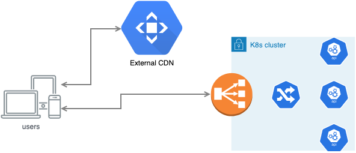

In this post, I’d like to share one solution to the problem I had at work. It is split into three parts: the definition of the problem, boring part (how we can achieve the goal), and then something fancy we can have if we go further with the solution.
The problem definition
TLDR we want to make our servant service to reply 404 whenever we see a particular query part in some endpoint subtree. If you are not interested in why do I need that you can proceed to the solution directly.
I’m working on building a few web services. One of them provides a service to run contests. In such contests lots of people come at once to solve some tasks. Thus we have a severe load in a bounded amount of time (It’s not entirely true as those contests are running all the time but the most of them are quite small). However, we have a numer of significant events with up to 20k unique visitors in just 3 hours, generating a load a bit higher than 500rps. This is not a high value but the main problem here is that any issue with availability or responsiveness hits our reputation a lot. Additionally in the past we had experienced DDOS attacks during such events. Currently our services can handle in the worst case a load at least three times higher than that but still, we are interested in reducing the surface of possible attacks. Even if we can handle many requests the network bandwidth in the cluster is not very wide, as a result it’s possible to introduce a denial of service by requesting many large files.
External CDN service (pic.1) is just a 3rd party service that provides API for uploading and removing files. Such a service takes all responsibilities for distributing data and providing the required quality of service. All you need to do in your user-facing service is to give links to this third-party service. The cost of that is that you need to upload and control files on that service explicitly.

Transparent CDN service (pic.2) is a service that acts as a distributed proxy for your service. In addition to proxying requests it stores and propagates files on its nodes based on response headers it sees. With hepl of that you can control all the data on CDN. Besides, such a service often provides a firewall and anti-DDOS services.

We chose a transparent CDN service because our patterns of working with contests are quite intricate: until frozen files are not expected to be cached and may mutate, but once frozen a file can never mutate and should be persisted. Additionally, we get DDOS protection and a firewall for free.
But just plugging a transparent CDN service in front of yours will not work. CDN is very simple: it does not and can’t analyse actual traffic, so if a malicious user asks for https://our.service/content/big_image, and then https://our.service/content/big_image?foobar both requests will pass through CDN and will need to be served by our service. This way attacker can generate infinite amount of URLs and be able to attack the service no matter if there is a CDN or not.
But what to do? One option is to forbid access to content if there is a query part in an URL. It looks like a sane option as “valid” clients never access content while adding query parameters. For some parts of the service it’s done by NGINX rules. But for other parts of it the service itself is responsible for generating contents and setting proper headers and we want it to be able to reply with 404 for such queries.
The solution.
We use servant as a framework to write our server. It allows writing a declarative description of the service structure on the type level. More details on that may be found in the servant tutorial, or the very basic howto.
We want to restrict query parameters on some part of the endpoints tree. It may look like:
This way, ContentEndpoint doesn’t know that it was restricted and can implement its logic without knowing how is it called. It is a crucial point that provides the necessary abstraction level.
We are going to implement RestrictQueryParam now. To achieve this we need to introduce a new servant combinator: something like Capture, QueryParam or other from the Servant.API hierarchy. It’s not particularly well documented but there are enough examples in the servant itself.
The first thing we need is to introduce a type for
-- | Forbid passing any query parameter.
-- If the parameter is given, then we throw 404
data RestrictQueryParams
deriving TypeableNote that it doesn’t have a type constructor - this construction may live on the type level only.
The next step is implementing a HasServer instance. This instance describes how we parse a request and how we work with a response.
instance
(HasServer api context) {-1-}
=> HasServer (RestrictQueryParams :> api) context where {-2-}
type ServerT (RestrictQueryParams :> api) m = ServerT api m {-3-}
hoistServerWithContext = undefined
route = undefinedThe instance is very straighforward: it tells that the internal server ({-1-}) wrapped in the RestrictQueryParams ({-2-}) is also a server. Type ServerT tells the resulting server type. In our case it’s the same as for the internal server: RestrictQueryParams doesn’t change it. hoistServerWithContext tells how to change underlying monad if needed, you skip it and see how it’s implemented in the other combinators:
And the last but not the least method is route that describes the routing itself.
route Proxy context subserver =
route (Proxy :: Proxy api) context $ add subserver
where
add Delayed{..} =
Delayed
{ paramsD = withRequest check *> paramsD
, ..
}
check :: Request -> DelayedIO ()
check req
| not $ B.null $ rawQueryString req =
delayedFailFatal err404
| otherwise = pure ()Here we add a parameters check to the internal server checks (add subserver). It checks the Wai.Request (withRequest check) in addition to the checks added by internal server (*> paramsD), keeping other checks untouched. In the check function we check rawQueryString and reply with a 404 if it’s not empty. Description of the request checks is given in the docs.
Instances for client and swagger are trivial; they pass all the work to the internal API.
instance (HasSwagger api) => HasSwagger (RestrictQueryParams :> API) where
toSwagger _ = toSwagger (Proxy :: Proxy api)
instance HasClient m api => HasClient m (RestrictQueryParams :> api) where
type Client m (RestrictQueryParams :> api) = Client m api
clientWithRoute pm Proxy req = clientWithRoute pm (Proxy :: Proxy api) req
hoistClientMonad pm _ f cl = hoistClientMonad pm (Proxy :: Proxy api) f clThis way, it has landed in our codebase because it just solves the problem. Adding this check solves our problem and can be reused in other projects.
More checks
But there is a problem. Sub server doesn’t know about that it runs in the restricted context but the server itself should know if this restriction can be safely applied. It can’t be used if the server uses query parameters. So we want to prove that we don’t have such a problem. It can be achieved using custom type erros, see more on docs on the ghc wiki.
To use them we need to introduce an additional type family. You may think of a type family as a function on types, that can perform pattern matching on types and return some result. In our case this function should either return a error or the same type. We need to traverse servant endpoint structure and return a type error when required.
type family CheckNoParams e where
CheckNoParams (f :> g) = f :> (CheckNoParams g)
CheckNoParams (f :<|> g) = CheckNoParams f :<|> CheckNoParams g
CheckNoParams (QueryParam sym x :> y) =
TypeError ('Text "can't use QueryParam under RestrictQueryParams")
CheckNoParams a = aWith this code we recursively go through all endpoints (lines 1 and 2), return an error if we see a query param (line 3), and type as it was if it’s not a QueryParam (line 5)
If you’ll use RestrictQueryParam on the endpoint that uses a query you’ll get the following error message:
I think after the post it will land in the codebase as well.
But it’s possible to go even further and allow the headers that are used in the internal site. Unfortunately this problem is much more complex and I’m not sure if checks will not be too expensive, but if anyone has a solution I’ll be happy to check it out.
comments powered by Disqus